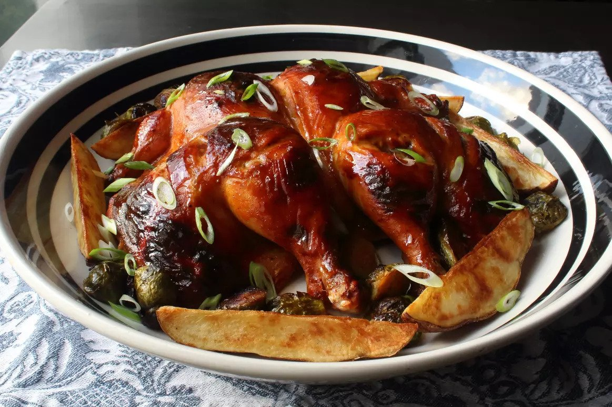
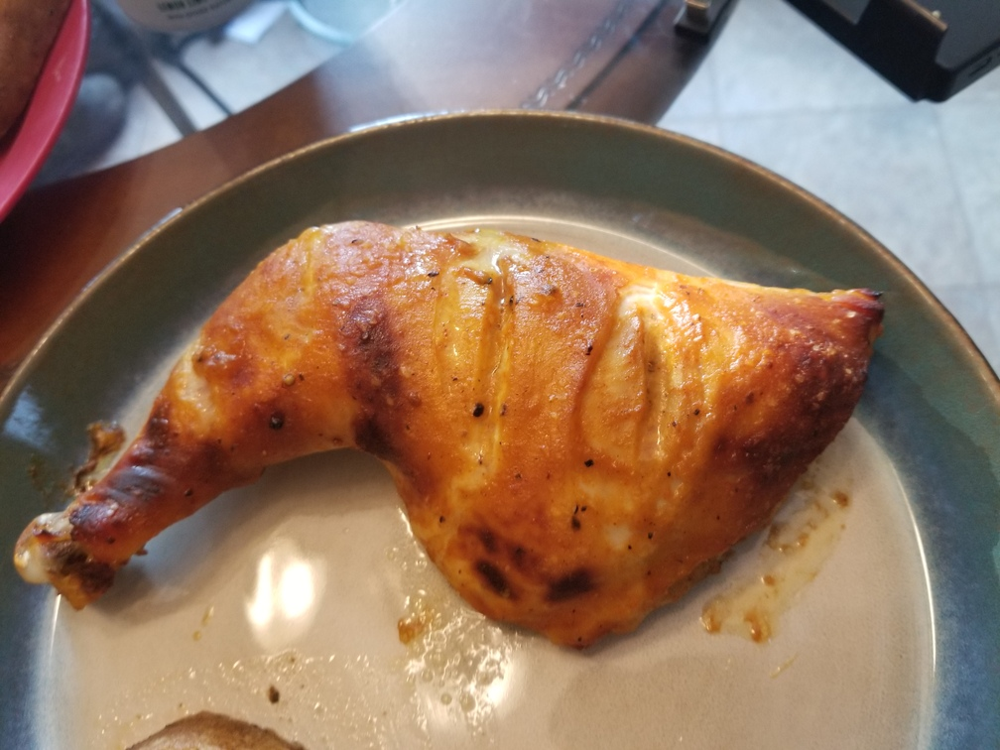

Honey Mustard Roast Chicken
Originally from: Food Wishes

Ingredients
- 1/2 cup yellow mustard
- 1/4 cup honey
- 1/4 cup seasoned rice wine vinegar
- 2 teaspoons Sriracha
- 1 teaspoon smoked paprika
- 1 teaspoon freshly ground black pepper
- 3 teaspoons kosher salt, plus more as needed
- 1 (4.5 pound) whole chicken
- 1/4 cup chicken stock, or as needed
- 2 tablespoons chopped green onions, or to taste
Directions
- Mix all ingredients except stock and green onion together. Marinate chicken for 4 - 12 hours.
- Bake chicken on foil lined baking sheet at 425° for 35 - 40 minutes.
- Take excess marinade and bring to a boil adding stock as necessary to thin.
- Baste chicken with sauce as desired and cook until chicken is done.
Notes
-
2020-08-30 - Cooked using 4 chicken quarters - turned out pretty good. Maybe use less mustard and more honey in future.
